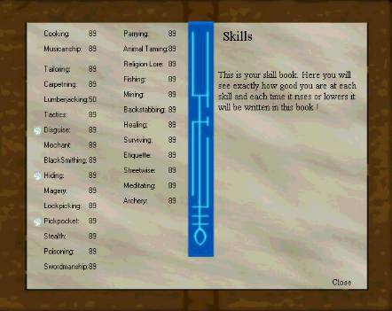

Era Online uses a different skill system than most games. Very few skills
in Era Online works in a sucessful/not sucessful system. Only a few does so (like
for example backstabbing). Most skills works like this; The higher the points you
have in a skill, the faster it performs the skill. You will always suceed, but it may
take a while to do it depending on your skill rate.
Lumberjacking for example. You equip a lumberjack axe and click on a tree, a
blue bar will pop up above your view window which represent how fast you are
cutting a log off. When the bar is full, you have cut a log of. This is much more
realistic. I mean, everyone could chop of a log, but not everyone would do it as
quick as a real lumberjacker ! This system works for almost all the other skills
such as; carpenting, blacksmithing, tailoring etc. Skills like parrying, tactics
and swordmanship will give you better chances in combat.
How do you know how much skill points you have in each skill ? Simply open the
skill book and you should be seeing something like this:

This is the skillbook. Very self explanatory ! You can see how many points you
have in each skill. Now here is a description of each skill and what it do:
Cooking
This comes into play when you are trying to roast a meat on a camp fire for
instance (USE meat then click on camp fire). Better the skill, the faster it goes !
Musicanship
Not working yet.
Tailoring
Comes into play when you are either making hide into cloth, cloth into folded
cloth or when you are trying to make clothing out of folded cloth
(See the Beginners Tutorial for how to use these trading skills.) Better the skill,
the faster it goes.
Carpenting
Comes into play when you are making planks out of logs (See the Beginners
Tutorial for how to use these trading skills.) or making a wooden object out of
planks. Better the skill, faster it goes.
Lumberjacking
Comes into play when you are chopping wood of a tree using a lumberjack axe.
Simply equip the lumberjack axe and click on a tree. Better the skill, the faster
it goes.
Tactics
Comes into play when you are fighting. The better the skill, less chance your foe
will have hitting you.
Disguise
If you click on the diamond infront of this skill you may or may not depending on
how high your skill is, change name to "a peasant" so people will have a harder
time to find you !
Merchant
Very valueable skill ! The better skill, the better prices you get when trading with
a NPC. If your skill is over 70, you will actually MAKE money when trading with
NPC`s.
Blacksmithing
Comes into play when you make ore into steel or when you make steel into
an object (See the Beginners Tutorial for how to use these trading skills.).
Better the skill, the faster it goes.
Hiding
If you click the diamond infront of the skill you will dissapear. Make sure you have
unequipped your shield and weapon or else people wil see this. The better the
skill, the less time it takes for you to hide. Also, creatures will not attack you if you
are hiding !
Magery
The better the skill, faster it goes to cast a spell.
Lockpicking
Not working yet.
Stealth
Not working yet.
Poisoning
Not working yet. (This skill we work something like this: When you poinson
someone, you have to stand right beside them and it may take a while to poison
them depending on your skill. If they move away for you before your done, the
poisoning will be unsucessful.)
Swordmanship
Works just like the tactics skill, only the difference is that the higher your
swordmanship skill are, the better chance of hitting your foe.
Parrying
How good you are defending yourself. Your foes hit on you may go severely
down depending on your parrying skill.
Animal Taming
Comes into play when you try to tame an animal. Not all animals can be tamed
at all skill ratings. For example, you may need 10 in animal taming to tame a
deer, and 98 to tame a cyclop ! Better the skill, faster it goes to tame the animal.
To tame a animal, target it and type /TAME
Region Lore
Comes into play when you pray to a priest or priestess. To pray, target a
a priest or priestess and type /PRAY. This skill is sucess or not based. If
you are sucessful, the god will grant you a miracle. After you reach certain
stats rates, they will not give you any more miracles. You can only pray once aday (RL) !
Fishing
Comes into play when you equip a fishing pole, and then click on water.
The better the skill, faster it goes. Fish can be cooked or sold.
Mining
Comes into play when you equip a pick axe, and then click on one of the
big stones or some cliffs. Better the skill, faster it goes. Eventually you will
end up with some ore.
Backstabbing
The first hit you make on your foe may be more deadly than the others.
Your backstabbing skill be checked, and if sucessful, the hit may cause
alot of damage.
Healing
Better skill you have, the faster it goes when you heal. Remember, you will
not automatically heal if you havn`t any food or drink on you (see the Flora
& Food section.). Also, if you target someone (including yourself), and then
USE a bandage you will heal a certain amount of health. Better the skill,
faster it goes applying the bandage. You can also heal by sitting with a
camp fire, but this has nothing to do with the healing skill.
Surviving
We will expand this much further. Currently, it comes into play when you
make a camp fire. Simply drop a log onto the ground and click it. Better
the skill, faster it goes starting the camp fire.
Ettiquette
Better the skill, better noble people and other high standing people will
treat you.
Streetwise
Better the skill, better traders and common people will treat you.
Meditating
To regain mana, simply type /MEDITATE and you will begin meditating.
The better the skill, the faster it goes.
Archery
Archery is not implented yet. Expect it to be soon !
Ok, now when you have gained a certain amount of experience, you will be
awarded 5 training points and your stats will raise abit (see the Improving
Yourself section). You can now use these training points by going to a
professional trainer, target him and type /TRAIN. This will bring up a training
window. Click the number of the skill you wish to raise and you will spend
a training point on that.
PS! Skills will not raise themselves by use until you have 10 points in that
skill. You will have to use training points to get the skill up to 10, after that
it can raise itself by repeated use. We use this system because it make
classes more unique and you really have to work with a skill to get good in it.
Skills will also raise themself after repeated use. This may be a slow process.
The game will tell you when a skill has gone up. Note that only specialized skills
may surpass 50 points. You select what you want your specialized skills to be
when making the character. Specialized skills appear in red in your skill book.
You can only have three specialized skills. We have this system, because it
discourage people to be power gamers (getting all the best stuff, getting all
maxed out skills etc.). Now you really have to work with something to be really
good in it.
Your title will be what your highest skill are. Easier said: Your class will change
to the skill you have most points in. Lets say you started out as a tailor but have
began fighting more and more and your tactics, swordmanship or parrying skill
is highest, your class will change to Warrior. Be careful what you let your highest
skill be, cause each class has limitations on what equipment they can use.